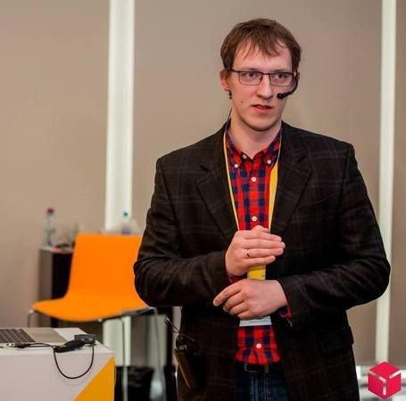

Доклады
-
 Феоктистов Александр Яндекс.Маркет , руководитель службы маркетинга
Феоктистов Александр Яндекс.Маркет , руководитель службы маркетингаДинамика рынка электронной торговли в России
- Как ведет себя рынок электронной торговли в кризис, данные о продажах товаров в разных категориях на Яндекс.Маркете
- В каких категориях сохраняется высокая маржинальность при растущем спросе, данные Яндекс.Маркета и интернет-магазинов
- Критерии, которые важны для покупателей при выборе товаров и магазинов, данные об использовании параметров на Яндекс.Маркете и результаты специального исследования пользовательского поведения совместно с компанией Gfk
- Развитие неценовой конкуренции -
Тюрин Денис АудиоМания , CIO/CTO
Школа ИМ. Как заработать лояльность и что из этого получается.
Можно ли купить лояльность?
Обещания клиентам и их исполнение.
Скидки, распродажи, купоны, акции – хорошо или плохо?
Сегментация клиентской базы и работа с ней, немного о когортном анализе. -
Батиевский Юрий Antop , Директор
Школа ИМ. Управление ассортиментом в условиях ограниченности человеческого ресурса
- Что делать, если товаров много, а товароведов нет
- Как могут помочь сервисы Яндекса
- Как автоматизировать процесс ценообразования
- Плюсы и минусы своих остатков -
 Сафонов Александр RealXenon.ru , управляющий партнёр
Сафонов Александр RealXenon.ru , управляющий партнёрШкола ИМ. Продажи без оператора, миф или реальность
Цель магазина - продажи, но не возможно строить долгосрочных отношений без постпродажного обслуживания клиентов.
- Даже вы не знаете своих клиентов лучше, чем аналитика
- Для чего нужны операторы?
- Построение Интернет-магазина без операторов. Почему нет?
- Как мотивировать продавцов/операторов?
- Какие бывают риски и как от них страховаться? -
Чельцов Степан, Лукашевич Ольга ,
Школа ИМ. Эффективный старт в интернете. Минимум действий, максимальный результат
- Первичная настройка и запуск сайта
- Конкурентная разведка
- Определение главных каналов продаж
- УТП
- Первичные бизнес-процессы
- Почему важны детали?
- Выстраивание бизнес-процессов.
- Cross KPI.
Рабочие материалы:
- чек лист по конкурентному анализу
- пример P&L (Отчет о прибылях и убытках / доходах и расходах) -
 Карапетян Гай , Соучредитель интернет-магазинов Maido.ru, Emy-teplo.ru, Основатель агентства Temaka.ru
Карапетян Гай , Соучредитель интернет-магазинов Maido.ru, Emy-teplo.ru, Основатель агентства Temaka.ruШкола ИМ. Каналы привлечения для разных этапов развития интернет-магазина.
· Анализ трафика у конкурентов и лидеров.
· Основные источники трафика.
· Серый и черные источники.
· На каком этапе, как подключать.
· Стоит ли пользоваться агентствами или фрилансерами.
· Ключевые показатели.
· На что обращать внимание, чтобы не тратить деньги впустую.
· Обзорный перечень всех возможных источников трафика. -
Зайцев Степан "Мир Правильных игрушек" (mpitoys.ru) , Ответственный за направление интернет-маркетинга в компании
Как самостоятельно подготовиться к разработке сайта и сэкономить от 200 000 рублей, без потери качества.
Почему проекты по разработке так часто безуспешны?
Какую роль в процессе должен играть сам бизнес?
Что и как делать при подготовке к разработке, вне зависимости от того, какими IT-компетенциями вы обладаете?
Наглядная инструкция-кейс, основанная на нашем опыте. -
 Пашин Василий Производство детской одежды "Утенок" , Учредитель
Пашин Василий Производство детской одежды "Утенок" , УчредительСовместные закупки как драйвер роста продаж для производителя и продавца
1) Стандартные пути решения: Средний чек, частотность покупок, растим оборачиваемость за счет сетей
2) А что если ...количество клиентов?
3) Как подготовиться и осуществить резкое увеличение числа небольших оптовых клиентов
4) Развитие движения Совместных закупок. Кто такие, стандартные механизмы закупки, где искать
5) Как делать из розничных покупателей оптовых
6) Что им продавать и каким образом
7) Автоматизация совместных закупок средствами Интернет-магазина -
Мокеев Михаил M-cosmetics ,
Как мы сделали 14632 отправок посылок за год? Без понимания и опыта продаж в интернете.
- Как мы создали наш проект, за обедом у друга в квартире?
- Хаос источник роста. Чем больше хаос, тем быстрее рост.
- Поговорим о показателях: первоначальные затраты, точка безубыточности, кол-во сотрудников, возврат инвестиций, кол-во ассортиментных позиций, оборачиваемость ассортимента.
- Автоматизация внутренний процессов на базе 1с. Выгрузки, отчеты, срм, авто смс рассылки, работа с ассортиментом.
- Онлайн и оффлайн. Какие сейчас приоритеты, что будем делать? Обьем интернет магазина стал равняться 8-ми нашим магазинам в торговых центрах.
- Цели компании и как мотивировать сотрудников на большой рост. Выстраивание отдела продаж. -
 Тимофей Шиколенков Боффо.ру, АудиоМания ,
Тимофей Шиколенков Боффо.ру, АудиоМания ,Что мешает небольшим интернет-магазинам вырасти до уровня средних
В России существует огромное количество небольших компаний, имеющих интернет-магазинов. Они создаются и умирают, едва не достигнув средних размеров.
Основная причина - концентрация на привлечении клиентов и мало внимания инфраструктуре. Я расскажу о том, как чуть не умер Бутик Боффо.
Какие были сделаны ошибки, почему они были сделаны, как они были исправлены и как обстоят дела теперь -
Тюрин Денис АудиоМания , CIO/CTO
Коммуникация с клиентом. Делаем «хорошо» клиенту и про себя не забываем!
Виды коммуникаций с клиентом
Общение по Email
Контроль и мониторинг
Разработка и внедрение нового функционала в существующую CMS
Результаты и «профит» !!!
Конец переписки -
Батиевский Юрий Antop , Директор
Внедрение новой платформы для интернет-магазина. История одного переезда
-Как мы выбирали платформу
-Проблемы выбора потенциальных подрядчиков
-Сложности и ошибки при разработке
-Безболезненный переезд с улучшением всех показателей -
 Егорушкин Сергей DPD in Russia , Head of B2C
Егорушкин Сергей DPD in Russia , Head of B2CШкола ИМ. Логистика, склад, упаковка.
- как и почему косячат доставщики и как этого избежать
- как отправлять покупателю то, что он заказал
- когда складу становится "больно" и чем лечить
- как сделать так, чтобы приехало то, что отправлено -
Сафонов Александр RealXenon.ru , управляющий партнёр
Резать больно только в первый раз или кого сокращаем в кризис?
В этот раз мы поговорим больше про оффлайн деятельность любого Интернет-Магазина. А именно - увольнении кадров для снижения затрат.
- Решить ли автоматизация все вопросы?
- Кем из сотрудников можно ""пожертвовать""?
- Свои продавцы или сторонний call-center?
- Насколько важно иметь программистов в штате?
- Сокращаем ассортимент для сокращения расходов -
 Никитин Иван , основатель «Иван Никитин и партнеры»
Никитин Иван , основатель «Иван Никитин и партнеры»Школа ИМ. Аналитика интернет-магазина. Эффективность маркетинговых каналов
- Основные метрики и методики контроля трафика
- Выделение и группировка каналов
- ABC-анализ маркетинговых каналов
- Конверсии: какие они бывают
- Анализ эффективности по прямым конверсиям
- Ассоциирование конверсий
- Цепочки многоканального взаимодействия
- Модели атрибуции
- Вовлеченность аудитории
- Вопросы и комментарии -
 Гаркунов Михаил , Независимый консультант по маркетингу и продажам
Гаркунов Михаил , Независимый консультант по маркетингу и продажамШкола ИМ. Анализ и прогнозирование базовых KPI в электронной коммерции
- Зачем нужны KPI?
- Ключевые KPI интернет-магазина.
- Другие базовые KPI интернет-магазина.
- Как правильно мониторить и прогнозировать KPI?